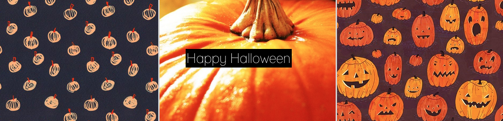
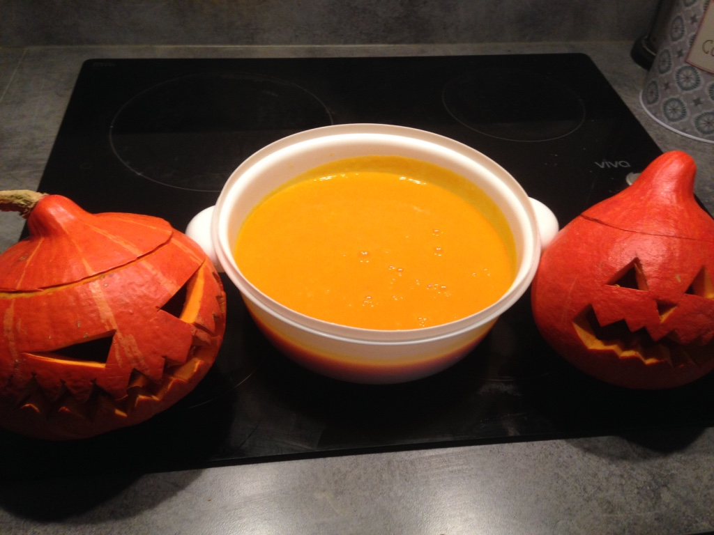

J-5 AVANT HALLOWEEN

Le potimarron
Chaque année, peu de temps avant le 31 octobre je pars au marché chercher des potimarrons pour l'Halloween. Pourquoi un potimarron et pas une citrouille ou encore une betterave selon la tradition ? Une question de goût tout simplement !
Et cette année, j'ai une raison de plus à choisir le potimarron : la soupe. Bref, chez moi l'halloween rime avec potimarron.
------- Edit : Un délice ! -------
Résultat :
